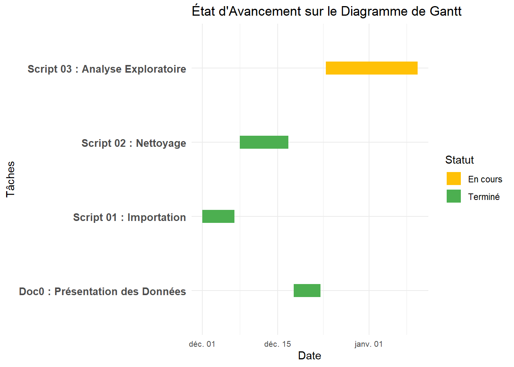

Ce rapport couvre les avancements réalisés entre le 18 et le 23 décembre 2024. Il présente les tâches accomplies, leur positionnement sur le diagramme de Gantt, ainsi que les priorités pour les deux semaines à venir.
Code
library(tidyverse)library(ggplot2)# Données du diagramme de Gantt mises à jourgantt_data <-data.frame(Tache =c("Script 01 : Importation", "Script 02 : Nettoyage", "Doc0 : Présentation des Données", "Script 03 : Analyse Exploratoire"),Debut =as.Date(c("2024-12-01", "2024-12-08", "2024-12-18", "2024-12-24")),Fin =as.Date(c("2024-12-07", "2024-12-17", "2024-12-23", "2025-01-10")),Statut =c("Terminé", "Terminé", "Terminé", "En cours"))# Diagramme de Ganttgantt_data %>%ggplot(aes(x = Debut, xend = Fin, y = Tache, yend = Tache, color = Statut)) +geom_segment(size =6) +scale_color_manual(values =c("Terminé"="#4CAF50", "En cours"="#FFC107")) +labs(title ="État d'Avancement sur le Diagramme de Gantt",x ="Date", y ="Tâches", color ="Statut") +theme_minimal() +theme(axis.text.y =element_text(size =10, face ="bold"),axis.text.x =element_text(size =8))

2 3. Résumé des Tâches Réalisées
Tâche
Statut
Résultats Clés
Script 01 : Importation
Terminé
Importation des données brutes, sauvegarde en RData.
Script 02 : Nettoyage
Terminé
Renommage, traitement des NA, création de Promo2_Participation.
Doc0 : Présentation des Données
Terminé
Document Quarto créé, résultats formatés avec Black Phoenix.
Script 03 : Analyse Exploratoire
En cours
Début des visualisations et analyse des corrélations.
3 4. Planification : Deux Semaines à Venir
3.1 4.1 Tâches Prioritaires
Tâche
Date Début
Date Fin
Objectif Clé
Finaliser Script 03
24 Décembre 2024
5 Janvier 2025
Analyse exploratoire et visualisations.
Rédiger Doc1
6 Janvier 2025
10 Janvier 2025
Intégrer les résultats de l’analyse exploratoire.
4 5. Objectifs Clés pour les Deux Prochaines Semaines
Compléter toutes les visualisations pour Script 03.
Produire un document synthétique (Doc1) présentant les résultats exploratoires.
S’assurer que toutes les données nettoyées et analysées sont sauvegardées proprement.